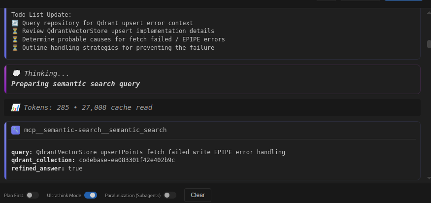

Semantic Search MCP
A powerful Model Context Protocol (MCP) server for semantic code search using vector embeddings and LLM-powered reranking.
What This Does
This MCP server provides semantic search capabilities for your codebase. Instead of keyword matching, it understands the meaning of your queries and finds the most relevant code, even if it uses different terminology.
This is the search/query component. For indexing your codebase, see the companion project: codebase-index-cli (Node.js real-time indexer with file watching and git commit tracking).
How These Projects Work Together
┌─────────────────────────────────────────────────────────────────┐
│ Your Workflow │
└─────────────────────────────────────────────────────────────────┘
1. INDEX (codebase-index-cli - Node.js)
├─ Watches your codebase for changes
├─ Parses code with tree-sitter (29+ languages)
├─ Creates embeddings with your chosen model
├─ Stores vectors in Qdrant or SQLite
├─ Tracks git commits with LLM analysis
└─ Maintains .codebase/state.json with collection info
2. SEARCH (semantic-search - Python MCP Server)
├─ Reads collection info from .codebase/state.json
├─ Queries the indexed vectors (Qdrant or SQLite)
├─ Uses same embedding model for consistency
├─ Returns semantically relevant code
└─ Optionally reranks with LLM analysis
3. CONSUME (Your AI Coding Assistant)
├─ Claude Code / Claude Desktop
├─ Cline (VS Code)
├─ Windsurf
└─ Any MCP-compatible client
In short:
- codebase-index-cli = Indexer (creates the searchable vectors)
- semantic-search = MCP Server (provides search tools to AI assistants)

The MCP server in action: Agent naturally using semantic_search tool as part of its workflow, with todo list tracking and "Thinking..." state visible
Core Features
- Semantic Search - Natural language queries to find code by intent
- LLM-Powered Reranking - AI-assisted relevance scoring and filtering
- Git Commit History Search - Search through analyzed commit history
- Multi-Project Search - Query other codebases/workspaces
- SQLite & Qdrant Support - Flexible vector storage backends
Critical Configuration Requirements
1. Embedder Model Consistency
CRITICAL
The embedder model used for search MUST MATCH the model used for indexing.
# Your indexer used this:
EMBEDDER_MODEL_ID=text-embedding-3-small
EMBEDDER_DIMENSION=1536
# Your search server MUST use the EXACT same:
MCP_CODEBASE_EMBEDDER_MODEL_ID=text-embedding-3-small
MCP_CODEBASE_EMBEDDER_DIMENSION=1536
Why this matters:
- Different models produce incompatible vector spaces
- Mismatched dimensions will cause search failures
- Using
text-embedding-3-largewhen indexed with-small= broken search - OpenAI models vs other providers = different vector spaces
Compatibility Matrix:
| Indexer Model | Search Model | Compatible? |
|---|---|---|
| text-embedding-3-small | text-embedding-3-small | ✅ YES |
| text-embedding-3-small | text-embedding-3-large | ❌ NO |
| text-embedding-3-small (1536d) | text-embedding-3-small (512d) | ❌ NO |
| nomic-embed-text-v1.5 | nomic-embed-text-v1.5 | ✅ YES |
| OpenAI model | HuggingFace model | ❌ NO |
2. LLM for Refined Results
When using refined_answer=True, the system uses an LLM (Judge) to:
- Analyze relevance of each code fragment
- Filter out noise and boilerplate
- Identify missing imports/references
- Generate a structured brief summary
Configuration:
# Reranking: Choose between Voyage AI or LLM Judge
# Option 1: Voyage AI Native Reranker
# Fast, specialized reranking model (~200ms)
# Get FREE API key at: https://www.voyageai.com/ (generous free tier)
MCP_CODEBASE_NATIVE_RERANK=true
MCP_CODEBASE_VOYAGE_API_KEY=pa-your-voyage-api-key
MCP_CODEBASE_VOYAGE_RERANK_MODEL=rerank-2.5
# Option 2: LLM Judge
# Flexible, can provide detailed explanations (~2-5s)
# Only used when NATIVE_RERANK=false
MCP_CODEBASE_JUDGE_PROVIDER=openai-compatible
MCP_CODEBASE_JUDGE_API_KEY=your-api-key
MCP_CODEBASE_JUDGE_BASE_URL=https://your-llm-endpoint.com/v1
MCP_CODEBASE_JUDGE_MODEL_ID=gpt-4o-mini
MCP_CODEBASE_JUDGE_MAX_TOKENS=32000
MCP_CODEBASE_JUDGE_TEMPERATURE=0.0
Reranking Options
Voyage AI Native Rerank:
- Fast (~200ms response time)
- Specialized reranking models
- Cost-effective for high-volume usage
- Free tier available at voyageai.com
- +42% improvement in relevance scores vs pure vector search
LLM Judge:
- Flexible, can provide explanations and reasoning
- Uses general-purpose LLM
- Response time: ~2-5s
- Good for complex analysis with detailed context
When to use reranking:
- Complex architectural questions
- Finding patterns across multiple files
- Understanding relationships between components
- Production deployments requiring high accuracy
When NOT to use reranking:
- Quick searches where raw speed is priority
- Simple queries with obvious answers
- When you want raw vector similarity scores
3. Vector Storage Backends
Qdrant (Primary)
- Scalable for large codebases
- Supports filtering and complex queries
- Required for commit history search
- Collection names: auto-generated from workspace path hash
SQLite (Alternative)
- Good for single-user local development
- Lower memory footprint
- Embedded in workspace directory
- Limitations: No commit history support
4. Two Server Modes
Mode 1: server_qdrant.py (Qdrant-based)
Tools:
- semantic_search - Basic semantic search
- visit_other_project - Search other workspaces
- search_commit_history - Query git history
Best for: - Multi-project workflows - Teams using shared Qdrant instance - Git commit analysis - Production deployments
Mode 2: server_sqlite.py (SQLite-based)
Tools:
- semantic_search - Basic semantic search
- visit_other_project - Search other workspaces (SQLite or Qdrant)
Best for: - Single developer local workflows - Offline development - Lower resource usage - Quick prototyping
Installation
Prerequisites
Before using this MCP server
You MUST index your codebase first.
Step 1: Install and Run the Indexer
Use codebase-index-cli to index your codebase:
# Install indexer globally
npm install -g codebase-index-cli
# Navigate to your project
cd /path/to/your/project
# Index with SQLite (local, portable)
codesql
# OR index with Qdrant (scalable, remote)
codebase
The indexer will:
- Create
.codebase/directory in your project - Generate
state.jsonwith collection info - Parse and embed your code
- Watch for changes in real-time
- Track git commits (optional)
Step 2: Install This MCP Server
Requirements for the search server:
- Python 3.10+
- Embedder API access (OpenAI, OpenRouter, local, etc.)
- LLM API access (for refined results - optional)
- Qdrant server (if using Qdrant mode) OR SQLite database (auto-created by indexer)
Setup:
# Clone repository
git clone https://github.com/dudufcb1/semantic-search
cd semantic_search
# Create virtual environment
python3 -m venv venv
source venv/bin/activate # Windows: venv\Scripts\activate
# Install dependencies
pip install fastmcp qdrant-client httpx pydantic pydantic-settings python-dotenv
# Configure environment
cp .env.example .env
# Edit .env with your settings
Environment Configuration
Minimal configuration:
# Embedder (REQUIRED)
MCP_CODEBASE_EMBEDDER_PROVIDER=openai-compatible
MCP_CODEBASE_EMBEDDER_API_KEY=your-key
MCP_CODEBASE_EMBEDDER_BASE_URL=https://api.example.com/v1
MCP_CODEBASE_EMBEDDER_MODEL_ID=text-embedding-3-small
MCP_CODEBASE_EMBEDDER_DIMENSION=1536 # Optional, model default if omitted
# Qdrant (REQUIRED for server_qdrant.py)
MCP_CODEBASE_QDRANT_URL=http://localhost:6333
MCP_CODEBASE_QDRANT_API_KEY=optional-key
# Judge/LLM (REQUIRED for refined_answer=True)
MCP_CODEBASE_JUDGE_PROVIDER=openai-compatible
MCP_CODEBASE_JUDGE_API_KEY=your-key
MCP_CODEBASE_JUDGE_BASE_URL=https://api.example.com/v1
MCP_CODEBASE_JUDGE_MODEL_ID=gpt-4o-mini
MCP_CODEBASE_JUDGE_MAX_TOKENS=32000
MCP_CODEBASE_JUDGE_TEMPERATURE=0.0
MCP Client Configuration
Claude Desktop (claude_desktop_config.json)
{
"mcpServers": {
"semantic-search": {
"command": "/absolute/path/to/semantic_search/venv/bin/python",
"args": ["/absolute/path/to/semantic_search/src/server_qdrant.py"],
"env": {
"MCP_CODEBASE_EMBEDDER_PROVIDER": "openai-compatible",
"MCP_CODEBASE_EMBEDDER_API_KEY": "your-key",
"MCP_CODEBASE_EMBEDDER_BASE_URL": "https://api.example.com/v1",
"MCP_CODEBASE_EMBEDDER_MODEL_ID": "text-embedding-3-small",
"MCP_CODEBASE_QDRANT_URL": "http://localhost:6333"
}
}
}
}
Cline/Windsurf (.mcp.toml)
[mcp_servers.semantic-search]
type = "stdio"
command = "/absolute/path/to/semantic_search/venv/bin/python"
args = ["/absolute/path/to/semantic_search/src/server_qdrant.py"]
timeout = 3600
[mcp_servers.semantic-search.env]
MCP_CODEBASE_EMBEDDER_PROVIDER = "openai-compatible"
MCP_CODEBASE_EMBEDDER_API_KEY = "your-key"
MCP_CODEBASE_EMBEDDER_BASE_URL = "https://api.example.com/v1"
MCP_CODEBASE_EMBEDDER_MODEL_ID = "text-embedding-3-small"
MCP_CODEBASE_QDRANT_URL = "http://localhost:6333"
Tools Reference
semantic_search
Basic semantic code search.
Parameters:
query(string, required) - Natural language queryqdrant_collection(string, required) - Collection name from.codebase/state.jsonmax_results(int, optional) - Max results to return (default: 20)refined_answer(bool, optional) - Use LLM analysis (default: false)
Example:
{
"query": "authentication middleware implementation",
"qdrant_collection": "codebase-7a1480dc62504bc490",
"max_results": 15,
"refined_answer": true
}
Returns:
- Without
refined_answer: Ranked code fragments with similarity scores - With
refined_answer: AI-analyzed brief + ranked relevant files + noise detection
search_commit_history
Search through git commit history that has been indexed and analyzed by LLM.
Parameters:
query(string, required) - What to search for in commit historyqdrant_collection(string, required) - Collection namemax_results(int, optional) - Max commits to return (default: 10)
Example:
{
"query": "when was SQLite storage implemented",
"qdrant_collection": "codebase-7a1480dc62504bc490",
"max_results": 5
}
Requirements:
- Git tracking must be enabled during indexing
- Commits must have been analyzed by LLM
- Qdrant backend required (not available with SQLite)
visit_other_project
Search in a different workspace/codebase.
Parameters:
query(string, required) - Search queryworkspace_path(string, optional) - Absolute path to workspaceqdrant_collection(string, optional) - Explicit collection namestorage_type(string, optional) - "sqlite" or "qdrant" (default: "qdrant")refined_answer(bool, optional) - Use LLM analysis (default: false)max_results(int, optional) - Max results (default: 20)
Resolution logic:
- If
qdrant_collectionspecified → use Qdrant with that collection - If
storage_type="sqlite"+workspace_path→ try SQLite at<workspace>/.codebase/vectors.db - If SQLite not found → fallback to Qdrant (calculate collection from
workspace_path) - If
storage_type="qdrant"→ calculate collection fromworkspace_path
Example:
{
"query": "payment processing flow",
"workspace_path": "/home/user/other-project",
"storage_type": "sqlite",
"refined_answer": true
}
semantic_parallel_search
Big Game Changer
This is the most powerful search tool available.
Why this matters:
Previously, every semantic search relied on a single query or on LLM-generated variations. That made it hard to control coverage and slowed things down when the model had to invent extra prompts.
What it does:
- Directed multi-query: You decide up to five additional variations (queries) that run in parallel. No extra LLM round-trip needed.
- Smart deduplication: Merges results by file + line range, removing noise and duplicates.
- Optional rerank: If
settings.native_rerankis enabled, Voyage still reranks just like before. - Optional brief: The LLM is only used when you request
refined_answer=True; otherwise you get raw merged results straight from Qdrant.
Why it's a game changer:
- Tighter coverage: Hit different angles (webhooks, validation, edge cases) in a single call.
- Faster execution:
asyncio.gatherbuilds embeddings and runs Qdrant searches concurrently without waiting for LLM creativity. - Traceable output: Each file in the response lists the exact queries that surfaced it ("Consultas que lo devolvieron").
How to use it:
result = semantic_parallel_search(
query="How do we handle payment processing?",
qdrant_collection="codebase-1d85d0a83c1348b3be",
queries=[
"payment gateway integration stripe",
"transaction validation error handling",
"payment confirmation webhooks"
],
max_results=20,
refined_answer=False
)
Note
If queries is None or empty, the tool just reuses the base query. The response annotates each file with the list of queries that returned it, so you can see which phrasing worked.
Understanding .codebase/state.json
The indexer (codebase-index-cli) creates a .codebase/ directory in your project with this structure:
your-project/
└── .codebase/
├── state.json # Collection info, indexing status, stats
├── cache.json # File hashes for change detection
└── vectors.db # SQLite database (if using `codesql` command)
state.json Format
This file contains critical information that the MCP server reads to find your indexed vectors:
{
"workspacePath": "/absolute/path/to/your/project",
"qdrantCollection": "codebase-1d85d0a83c1348b3be",
"createdAt": "2025-10-17T10:13:48.454Z",
"updatedAt": "2025-10-17T10:39:00.715Z",
"indexingStatus": {
"state": "watching"
},
"lastActivity": {
"timestamp": "2025-10-17T10:39:00.712Z",
"action": "indexed",
"filePath": "README.md",
"details": {
"blockCount": 48
}
},
"qdrantStats": {
"totalVectors": 396,
"uniqueFiles": 22,
"vectorDimension": 1536,
"lastUpdated": "2025-10-17T10:30:03.891Z"
}
}
Key Fields:
qdrantCollection- The collection name to use when callingsemantic_search()workspacePath- Absolute path to the indexed projectvectorDimension- The dimension of the embedding model used (MUST match your MCP server config)indexingStatus.state- Current state: "watching", "indexing", "idle", or "error"qdrantStats.totalVectors- Number of indexed code chunksqdrantStats.uniqueFiles- Number of files in the index
How the MCP Server Uses state.json
When you call semantic_search(), the server:
- Reads
<workspace>/.codebase/state.json - Extracts
qdrantCollection(e.g., "codebase-1d85d0a83c1348b3be") - Connects to Qdrant/SQLite using that collection
- Performs the semantic search
- Returns ranked results
Info
You don't need to manually create or edit this file - the indexer manages it automatically.
Common Pitfalls
0. Indexer Not Running
Problem: No .codebase/state.json file found or "collection doesn't exist" errors
Cause: You haven't indexed your codebase yet
Solution:
# Install and run the indexer first
npm install -g codebase-index-cli
# Navigate to your project
cd /path/to/your/project
# Run the indexer (choose one)
codesql # For SQLite storage
codebase # For Qdrant storage
Warning
The indexer MUST be running or have completed indexing before you can use this MCP server. See codebase-index-cli for details.
1. Model Mismatch
Problem: Search returns irrelevant results or errors
Cause: Embedder model doesn't match indexing model
Solution:
# Check your indexer config
cat .codebase/config.json
# Match these settings exactly:
MCP_CODEBASE_EMBEDDER_MODEL_ID=<same-as-indexer>
MCP_CODEBASE_EMBEDDER_DIMENSION=<same-as-indexer>
2. Missing LLM Config
Problem: refined_answer=True fails with authentication errors
Cause: Judge/LLM credentials not configured
Solution:
# Configure LLM for refined results
MCP_CODEBASE_JUDGE_API_KEY=your-llm-api-key
MCP_CODEBASE_JUDGE_BASE_URL=https://your-llm-endpoint/v1
3. Empty Search Results
Problem: No results returned for valid queries
Causes:
- Workspace not indexed yet
- Wrong collection name
- Qdrant server not running
- Score threshold too high
Solutions:
# Verify collection exists
curl http://localhost:6333/collections
# Check state file for correct collection name
cat <workspace>/.codebase/state.json
# Lower score threshold
MCP_CODEBASE_SEARCH_MIN_SCORE=0.1 # Default: 0.4
4. Commit History Not Working
Problem: search_commit_history returns no results
Causes:
- Git tracking not enabled during indexing
- Using SQLite backend (not supported)
- No commits analyzed yet
Solution:
- Ensure Qdrant backend is used
- Enable git tracking in indexer
- Wait for commits to be analyzed and indexed
Performance Considerations
Search Speed
- Basic search: ~100-500ms (depends on collection size)
- With
refined_answer: +2-10s (LLM processing overhead) - Commit history: ~200-800ms (filtered search)
Token Usage (with refined_answer=True)
- Input tokens: ~2000-8000 per search (depends on result count)
- Output tokens: ~500-3000 (depends on complexity)
- Cost estimate: $0.01-0.05 per refined search (varies by LLM provider)
Memory Usage
- Qdrant mode: ~50-200MB (depends on client connections)
- SQLite mode: ~20-100MB (embedded database)
- Peak during search: +100-300MB (vector operations)
Project Links
- Semantic Search MCP: github.com/dudufcb1/semantic-search
- Codebase Index CLI: github.com/dudufcb1/codebase-index-cli
License
MIT
Contributing
This project is designed to be feature-complete for its intended use case. For bugs, documentation improvements, or critical features, see the Contributing guidelines in the repository.